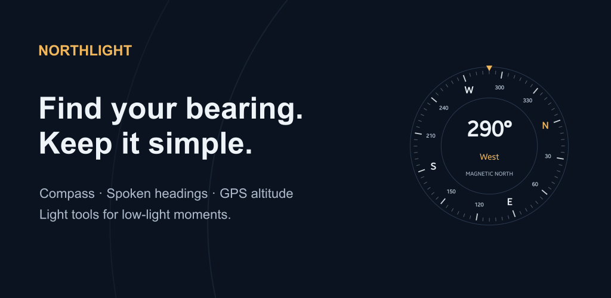
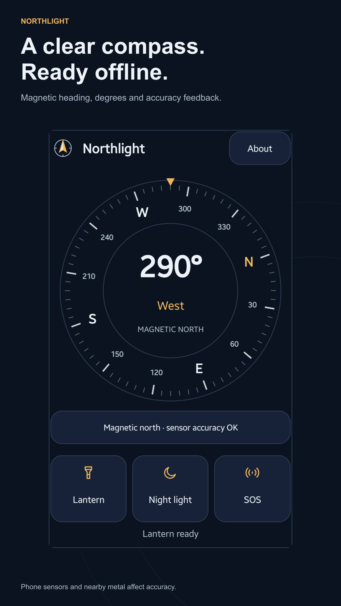
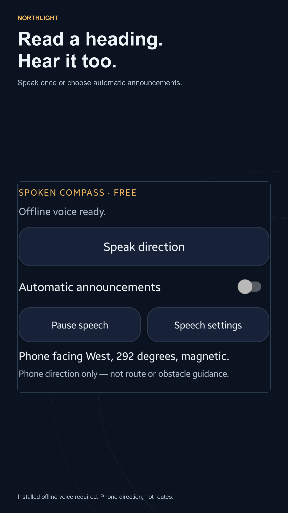
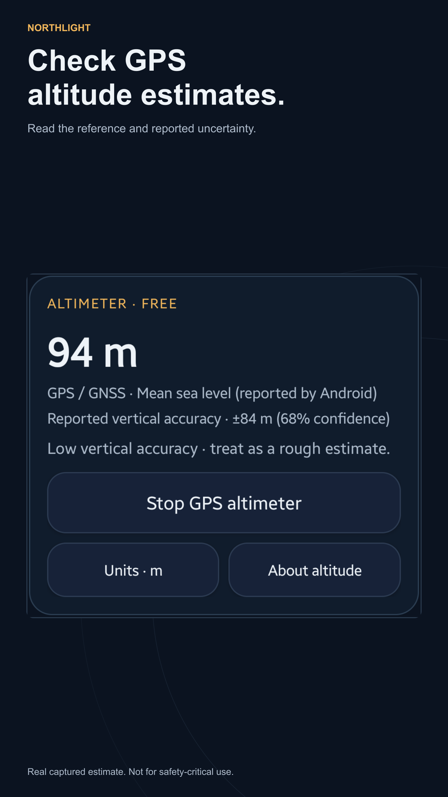
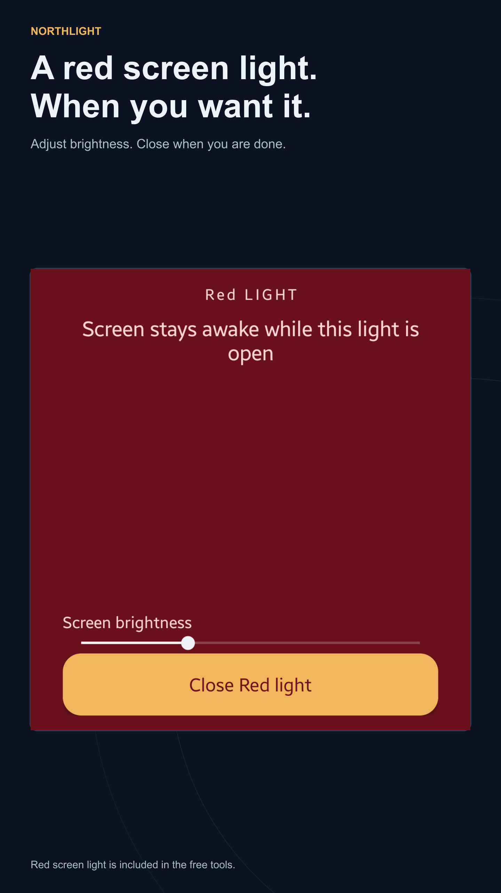
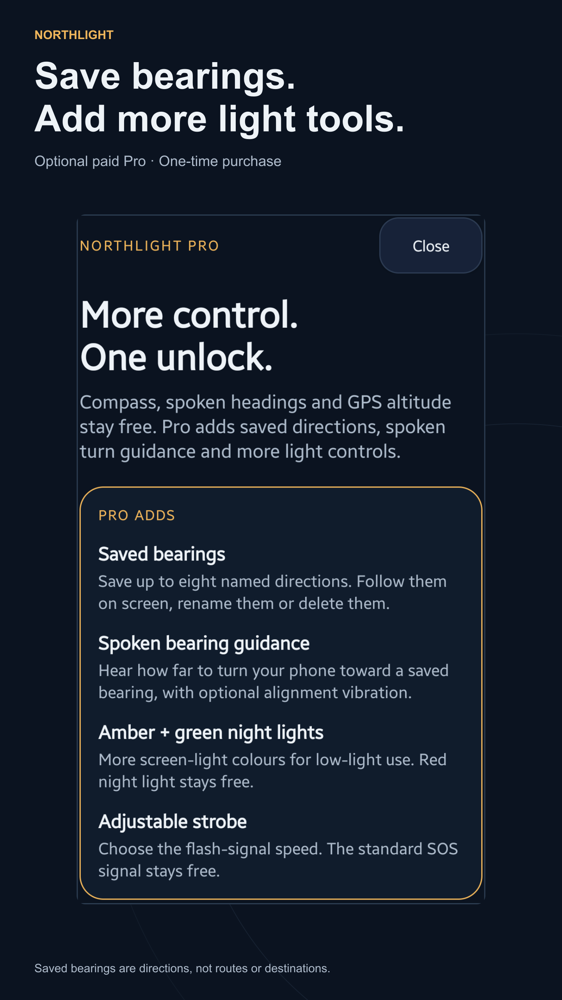
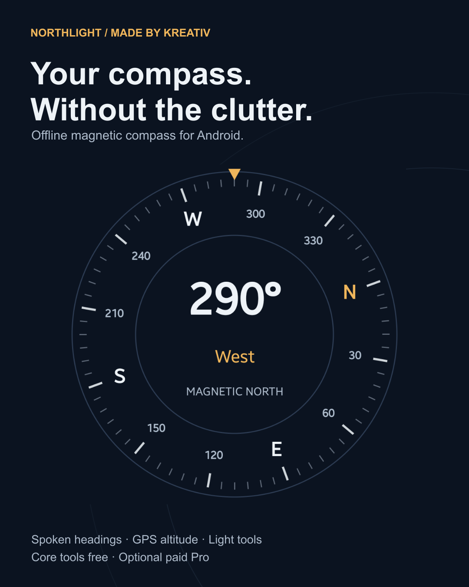
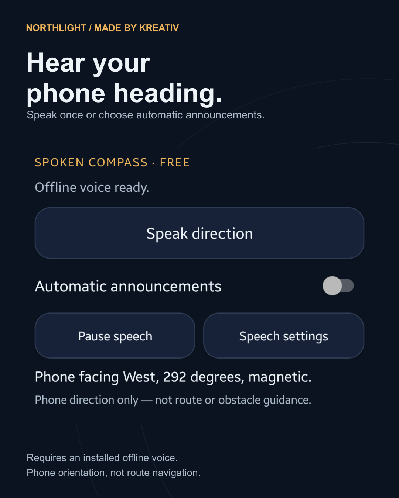
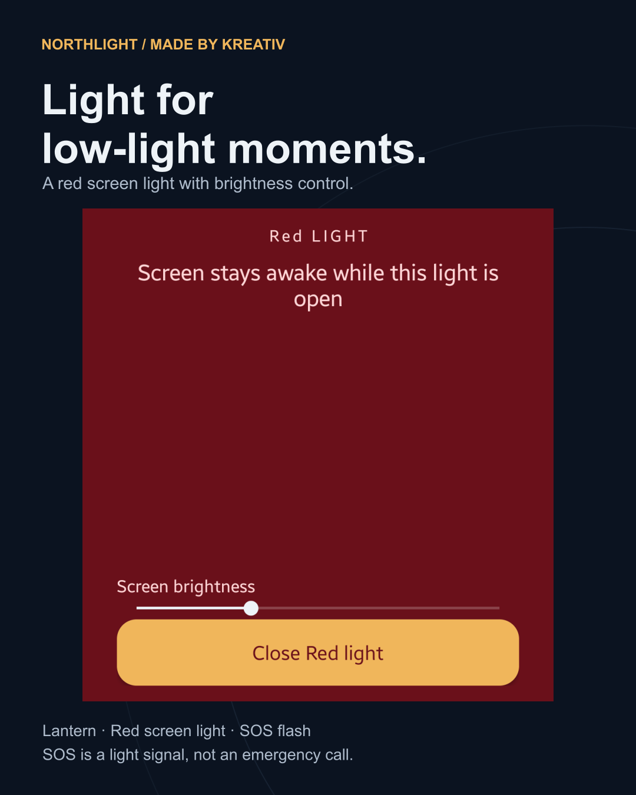

Made by Kreativ · Prepared 17 October 2026
Northlight marketing and listing review
Offline compass, spoken headings, GPS altitude estimates and light tools. A focused campaign built around the real 1.2.0 app.
Drafts only. Nothing has been published, uploaded, submitted or sent.
All app screens below are real captures, cropped and scaled without repainting the UI. The recorded readings are examples. The Pro image shows its benefits page, not purchased tools in use. No Console AI-label settings were changed.
Proposed store copy
Title 27/30 · Short description 77/80 · Full description 3042/4000
Northlight: Offline Compass
Offline compass, spoken headings, GPS altitude and lights. Optional paid Pro.
Find your bearing with Northlight, an offline magnetic compass for Android with optional spoken headings, GPS altitude estimates and useful light tools. Read a heading, hear the direction your phone is facing, check an approximate altitude or open a red screen light. The core tools are free, with no ads or account. FREE COMPASS AND SPOKEN HEADINGS - Large magnetic compass with degrees and direction inside the dial - Sensor accuracy feedback and figure-eight calibration guidance - Speak one heading or enable optional automatic announcements - Installed offline English or Romanian voices, with speed and interval controls - Screen-reader handoff when active OPTIONAL GPS ALTIMETER - Altitude estimates in metres or feet - Shows the altitude reference and reported vertical uncertainty when available - Starts only when enabled with precise foreground location permission - Stops when you leave the home screen or lock your phone; never restarts on its own LIGHT TOOLS - Camera LED lantern, with brightness control on supported phones - Adjustable red screen light - Repeating SOS flash signal - Quick Settings lantern tile OPTIONAL NORTHLIGHT PRO — ONE-TIME PURCHASE - Save up to eight named magnetic bearings on this device - Open saved bearings from the home screen; follow, rename or delete them - Optional spoken phone-turn guidance and alignment haptic feedback - Amber and green screen lights, plus an adjustable flash strobe - Restore ownership using the same Google Play account; no subscription Compass, spoken headings, GPS altitude, lantern, red light and SOS stay free. Features depend on your phone's sensors, camera flash, Android settings and permissions. Your local Pro price is shown before purchase. ON-DEVICE TOOLS No account, ads, analytics or tracking. Camera access is requested for flash tools only; Northlight does not take photos or record video. Location is optional and used only for the altimeter. Coordinates, routes and altitude history are not saved or uploaded. No microphone or audio recording is used. Compass and light tools work offline. Speech needs an installed offline voice; installing voices may require internet access. With a screen reader active, its own voice and privacy settings apply. GPS needs usable satellite reception. Google Play uses internet access for purchases and ownership checks. Website links open your browser only when tapped. IMPORTANT LIMITATIONS The compass shows magnetic north, not true north. Metal, magnets and cases can affect it. GPS altitude is an estimate: read its reference and uncertainty. WGS84 height is not sea level or height above ground. Spoken and saved-bearing cues describe phone orientation, not walking direction, routes, obstacles or arrival. SOS is a flashing light, not an emergency call. Northlight is not for safety-critical navigation or a substitute for emergency communications. Use flashing lights with care around people sensitive to flashes. Privacy: https://madebykreativ.com/privacy/northlight/ Support: info@madebykreativ.com
Copy-ready listing · Current title stays unchanged until approval.
Feature graphic

Five phone screenshots in proposed order










Sources and exact crops · 1440 × 2560 opaque PNGs.
Three social graphics






Launch caption
Graphic 01 with the launch caption
A clear compass. A few useful tools. No clutter. I built Northlight for Android: an offline magnetic compass with spoken headings, optional GPS altitude estimates, an LED lantern, red screen light and SOS flashing signal. Those core tools are free, with no ads or account. Optional one-time Pro adds saved bearings and more light controls. Speech needs an installed offline voice. GPS needs satellite reception and precise location permission. This is a phone-orientation tool, not route navigation or emergency communications. If you try it, I would love to know whether the heading and accuracy feedback are easy to understand. — Andrei, Made by Kreativ https://play.google.com/store/apps/details?id=com.kreativ.northlight&utm_source=launch_social&utm_medium=social&utm_campaign=northlight_offline_202610
All English and Romanian captions
Short screenshot tour
20 seconds, vertical and silent. Uses real app screenshots; not a live recording or a demonstration of audible speech.
Open MP4 · SRT captions · Future live recording brief
Website tutorial and app page
A screenshot-led guide to compass, speech, GPS uncertainty and lights. The app-page proposal adds the live speech and altitude features and links to the tutorial after publication.
Unsent outreach drafts
Droid Life
https://www.droid-life.com/contact/
Official contact form checked 17 October 2026; invites app tips. Unsent editorial pitch, no coverage promised.
Android app tip: Northlight offline compass with spoken headings Hi Droid Life team, I am Andrei, the developer of Northlight. Your contact page invites app tips, so I wanted to share a focused Android utility. Northlight combines a free offline magnetic compass, optional spoken headings, GPS altitude estimates and light tools. The 1.2.0 release adds a larger dial, speech and an altimeter that displays the altitude reference and reported uncertainty. No ads or account. Optional one-time Pro adds saved bearings and extra light tools. A useful demonstration would be how a compass heading differs from route navigation, and why an altitude reading needs an uncertainty label. The app does not plan routes or call emergency services. If this fits your app coverage, I would welcome an independent look. No favourable review or placement is expected. Thanks, Andrei Made by Kreativ https://play.google.com/store/apps/details?id=com.kreativ.northlight&utm_source=droid_life&utm_medium=outreach&utm_campaign=northlight_offline_202610
Android Authority
news@androidauthority.com
News address checked on the official contact page on 17 October 2026: https://www.androidauthority.com/contact/ . Unsent, unpaid editorial tip.
App tip: a small offline compass with honest altitude feedback Hi Android Authority news team, I built Northlight, a small Android compass and light app. Its free tools include magnetic headings, installed-offline-voice readings, optional GPS altitude and practical screen/flash lights. No ads or account; optional Pro is a one-time unlock. The current 1.2.0 version puts accuracy information alongside the readings: calibration feedback for the compass, and reference plus reported vertical uncertainty for GPS altitude. It is not route navigation, an obstacle detector or an emergency communications service. I have prepared real screenshots and a short screenshot slideshow, not fabricated app footage. If useful for your Android-app coverage, the public listing and privacy policy are below. An independent review is welcome; no positive rating or guaranteed coverage is requested. Thanks, Andrei Made by Kreativ https://play.google.com/store/apps/details?id=com.kreativ.northlight&utm_source=android_authority&utm_medium=outreach&utm_campaign=northlight_offline_202610
Android app roundup creator
Select a creator and verify their own current business-contact route before sending.
Reusable unsent pitch. No recipient or contact address has been verified for this draft.
Android roundup candidate: Northlight compass and light tools Hi, I am the developer of Northlight, an Android utility with a large offline magnetic compass, optional spoken headings, GPS altitude estimates and light tools. Core features are free; a one-time Pro unlock adds saved bearings and more light controls. A short roundup demonstration could show a heading, a spoken reading and the GPS uncertainty label. The public Play build is available to test. I have attached no private access codes or purchase claims. Northlight describes phone orientation, not routes, obstacles or emergency communications. If it suits your audience, I would welcome an independent look. No favourable review is expected. Thanks, Andrei Made by Kreativ https://play.google.com/store/apps/details?id=com.kreativ.northlight&utm_source=creator_roundup&utm_medium=outreach&utm_campaign=northlight_offline_202610
Campaign links
Use a different source per channel. Attribution may be incomplete; no tracking SDK was added.
First actions after approval
- Approve the proposed title, copy and store assets.
- Publish and verify the tutorial, then add its link to the listing and app page.
- Post graphic 01 with its launch caption on one existing channel.
- Use one approved community post or editorial pitch, where welcome.
- Compare listing visits, install clicks and CTR, then actual acquisitions separately after meaningful traffic accumulates.